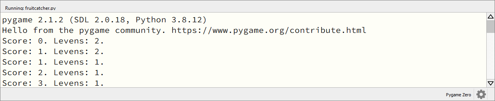
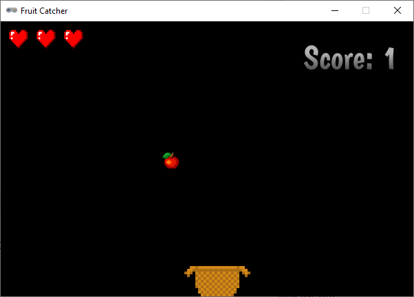

1.4. Score en levens#
Als de vallende appel in het mandje wordt opgevangen, krijgt de speler een punt. Maar wanneer de appel naast het mandje valt, verliest de speler een leven. In dit deel gaan we dat programmeren.
1.4.1. Variabelen#
Om de score en het aantal levens bij te houden, gebruiken we twee variabelen. Maak deze na de vensterinstellingen:
1import random
2
3# Vensterinstellingen
4WIDTH = 600
5HEIGHT = 400
6TITLE = 'Fruit Catcher'
7MARGIN = 20
8
9# Variabelen voor score en levens
10score = 0
11lives = 3
Wanneer we deze variabelen straks in functies een andere waarde willen geven, moeten we het global keyword gebruiken. Weet je niet meer precies wat dat betekent, kijk dan nog even terug bij het Alien spel. Voor nu komt het er op neer dat je aan de update() functie de volgende regel moet toevoegen, direct na de regel waarop de functie wordt gedefinieerd:
37# Update() functie
38def update():
39 global score, lives
40
41 # Keyboard events
42 ...
1.4.2. Collision detection#
Bij het Alien spel heb je gezien wat collision detection is. Voor Fruit Catcher moeten we detecteren of de appel en de mand elkaar raken. Dat hoeven we echter pas te doen op het moment dat de appel laag genoeg is. In de update() functie gaan we dit onderzoeken met een if statement.
Opdracht 01
Hieronder zie je de vorm van het geneste if statement waarmee we gaan checken of de appel in de mand valt, in gewone-mensentaal. Vertaal dit statement naar Python code. Om te checken of het middelpunt van de appel sprite zich binnen de mand bevindt, gebruik je basket.collidepoint(fruit.center).
Voeg in de buitenste lus van het if statement dat je in opdracht 01 maakte de volgende twee regels toe:
54# Collision detection
55if ...:
56 if ...:
57 ...
58 else:
59 ...
60 print(f'Score: {score}. Levens: {lives}.')
61 init_fruit()
Regel 60 print de score en het aantal levens in de console en regel 61 plaatst de appel weer op een willekeurige positie boven het venster. Wanneer je de code runt, kun je in de console zien hoe de score en het aantal levens verloopt.

De basis van het spel is nu klaar, het is speelbaar. Het is echter niet zo mooi om de score en het aantal levens in de console te printen; we willen natuurlijk dat die in het speelvenster zichtbaar zijn. Bovendien kan de speler nu gewoon doorspelen wanneer de drie levens op zijn. Ook dat moeten we verbeteren.
1.4.3. Score tonen#
Voor het tonen van tekst gebruik je in Pygame Zero de functie screen.draw.text(). Aan deze functie kun je allerlei argumenten meegeven zoals positie, grootte, kleur en lettertype van de tekst. En natuurlijk de tekst zelf. Kijk voor meer informatie over de mogelijkheden in de Pygame Zero handleiding.
Voeg boven de draw() functie een nieuwe functie draw_score() toe:
31# Functie draw_score() tekent de score
32def draw_score():
33 screen.draw.text(f'Score: {score}', topright=(580,20), width=360, fontname="boogaloo", fontsize=48, color="#DDDDDD", gcolor="#666666", owidth=1.5, ocolor="black", alpha=0.8)
En roep deze nieuwe functie aan in de draw() functie:
35# Draw() functie
36def draw():
37 screen.clear()
38 fruit.draw()
39 basket.draw()
40 draw_score()
Run de code om het resultaat te zien.
1.4.4. Levens tonen#
Het aantal levens willen we niet met tekst tonen, maar met afbeeldingen van hartjes. Net zoals we voor de score een aparte functie draw_score() maakten, maken we voor de levens een functie draw_lives(). Voeg deze toe onder de draw_score() functie.
31# Functie draw_score() tekent de score
32def draw_score():
33 screen.draw.text(f'
34
35# Functie draw_lives() tekent de hartjes die de levens voorstellen
36def draw_lives():
37 for life in range(lives):
38 screen.blit('heart', (10 + 40*life, 10))
In deze functie gebruiken we een for loop die de tellervariabele life van 0 tot aan de waarde van lives laat lopen (let op: niet tot en met). Bij aanvang van het spel is lives = 3, dus dan krijgt life in de for loop achtereenvolgens de waarden 0, 1 en 2.
Voor elk van deze waarden wordt de regel screen.blit('heart', (10 + 40*life, 10)) uitgevoerd. De screen.blit() functie gebruik je meestal wanneer je een statische afbeelding wilt laten tekenen. Dat wil zeggen een afbeelding die tijdens het spel niet beweegt. Je moet twee argumenten meegeven: de naam van de afbeelding (in je images map) en de positie (van de linker bovenhoek van de afbeelding).
In regel 38 wordt als positie (10 + 40*life, 10) meegegeven. Daardoor worden de drie hartjes mooi naast elkaar getekend:
hartje 1 (
life = 0) op positie(10, 10)hartje 2 (
life = 1) op positie(50, 10)hartje 3 (
life = 2) op positie(90, 10)
Dat tekenen gebeurt echter pas wanneer we de draw_lives() functie aanroepen in de draw() functie:
40# Draw() functie
41def draw():
42 screen.clear()
43 fruit.draw()
44 basket.draw()
45 draw_score()
46 draw_lives()

Voilà het spel toont de score en de levens en het ziet er al behoorlijk goed uit. Maar we zijn nog niet helemaal klaar. Er wordt nog geen game over getoond; de speler kan gewoon blijven doorspelen. En ook begint het spel meteen nadat je in Mu editor op de Run knop hebt geklikt. Het is beter om de speler te laten bepalen wanneer het spel begint, bijvoorbeeld door drukken op de spatiebalk. Dat ga je in het volgende deel programmeren.